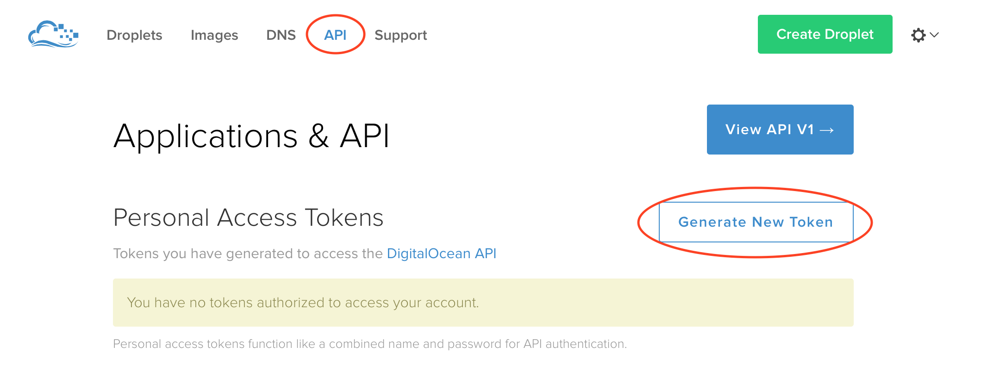
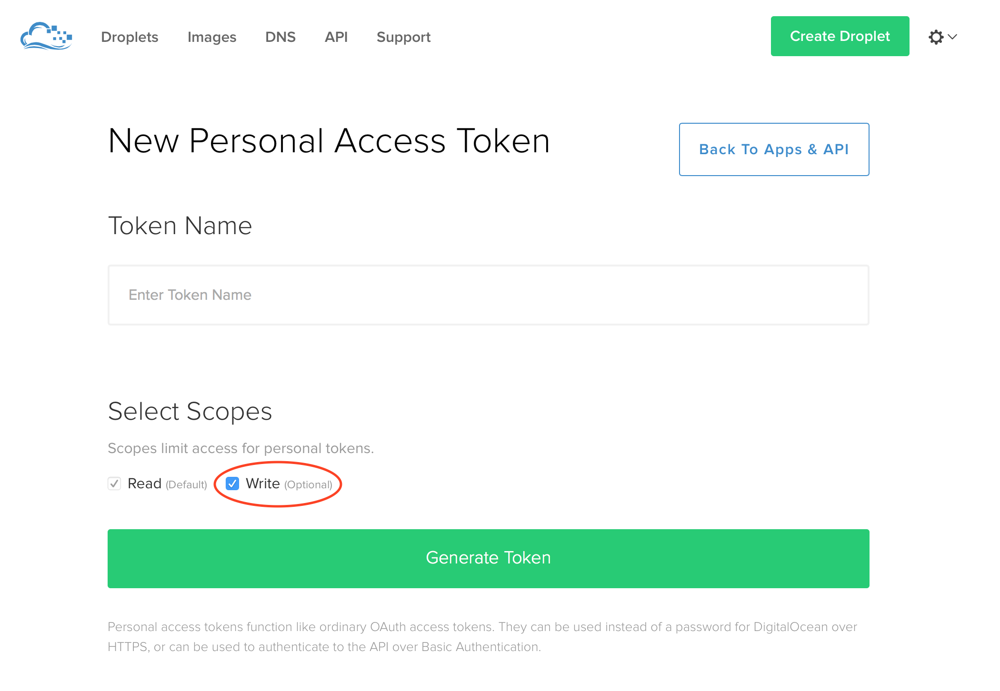
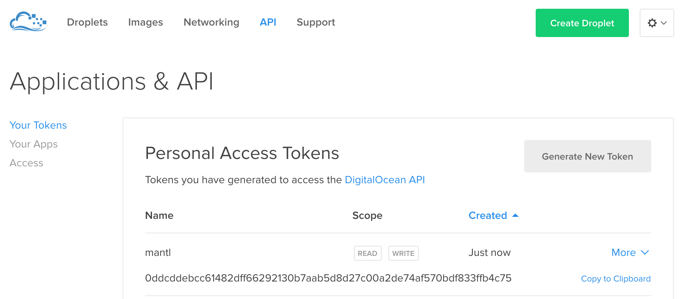

DigitalOcean¶
New in version 0.3.
As of Mantl 0.3 you can bring up DigitalOcean environments using Terraform.
Configuring Terraform for DigitalOcean¶
Before we can build any servers using Terraform and Ansible, we need to configure authentication. We’ll be filling in the authentication variables for the template located at terraform/digitalocean.sample.tf. It looks like this:
provider "digitalocean" {
token = ""
}
module "do-keypair" {
source = "./terraform/digitalocean/keypair"
public_key_filename = "~/.ssh/id_rsa.pub"
}
module "do-hosts" {
source = "./terraform/digitalocean/hosts"
ssh_key = "${module.do-keypair.keypair_id}"
region_name = "nyc3" # this must be a region with metadata support
control_count = 3
worker_count = 4
kubeworker_count = 2
edge_count = 2
}
Copy that file in it’s entirety to the root of the project to start customization. In the next sections, we’ll explain how to obtain these settings.
API Key¶
To use DigitalOcean from Terraform, you’ll need an API key. You can create one at the API page of DigitalOcean UI.
To create a token, click “Generate New Token” in the “Personal Access Tokens” list. Name your token (mantl could be a good name) and make sure that write access is granted.
Once your token is created, you will need to copy it to the “token” field of the DigitalOcean provider. The token will only be displayed once, so do it before refreshing the page or navigating away.
If you don’t want to keep your access token in a file, you can instead write it to an environment variable:
- DIGITALOCEAN_TOKEN¶
The DigitalOcean token to use for Terraform-created resources
Regions and Sizes¶
As the sample notes, the region you deploy in must support metadata. All the newer regions support this (NYC3, for instance.) If you don’t use a metadata-supported region Ansible will not know which roles to apply to your servers.
To find out if your desired region has metadata support:
curl -u "$DIGITALOCEAN_KEY:" https://api.digitalocean.com/v2/regions
This call will return a list of objects like the following. If "metadata" is in the “features” key, you can use the provided slug as region_name to select it.
{
"name": "New York 3",
"slug": "nyc3",
"sizes": [
"32gb",
"16gb",
"2gb",
"1gb",
"4gb",
"8gb",
"512mb",
"64gb",
"48gb"
],
"features": [
"private_networking",
"backups",
"ipv6",
"metadata"
],
"available": true
}
Provisioning¶
Once you’re all set up with the provider, customize your modules (for control_count and worker_count), run terraform get to prepare Terraform to provision your cluster, terraform plan to see what will be created, and terraform apply to provision the cluster. Afterwards, you can use the instructions in getting started to install Mantl on your new cluster.